Cartas
System Cards
Recuperación

| ¿Qué hace? | ¿Cuanto Cuesta? |
|---|---|
| Una system card para recuperar la salud perdida. | 2000 |
- Nivel 1: Cura 250 puntos de vida.
- Nivel 2: Cura 260 puntos de vida.
En Pasivo: Regenera vida lentamente mientras luchas. - Nivel 3: Cura 270 puntos de vida.
En Pasivo: Regenera el doble de vida mientras luchas. - Nivel 4: Cura 280 puntos de vida.
En Pasivo: Regenera el triple de vida mientras luchas.
Nuevo Álbum de Cartas
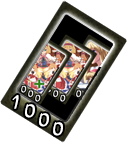| ¿Qué hace? | ¿Cuanto Cuesta? |
|---|---|
| Reinicia tú deck y obten un nuevo deck de cinco cartas. La reducción de costos no se aplica cuando usas tu carta de system card. |
1000 |
- Nivel 1: Reinicia tú Deck.
- Nivel 2: Reinicia tú Deck.
En Pasivo: Usar las cartas cuesta un 10% menos de energía. - Nivel 3: Reinicia tú Deck.
En Pasivo: Usar las cartas cuesta un 20% menos de energía. - Nivel 4: Reinicia tú Deck.
En Pasivo: Usar las cartas cuesta un 30% menos de energía.
Potenciador Danmaku
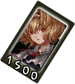| ¿Qué hace? | ¿Cuanto Cuesta? |
|---|---|
| Una carta de hechizos que recarga tu barra de Danmaku convirtiendo el poder. Cuando se usa, su barra permanece al máximo durante 8 segundos y no puede ganar energía mientras dura este efecto, más tres segundos adicionales después de que finaliza. |
1500 |
- Nivel 1: La barra permanece al máximo durante 8 segundos.
- Nivel 2: La barra permanece al máximo durante 9 segundos.
En Pasivo: Tu barra se carga un poco más rápido mientras luchas. - Nivel 3: La barra permanece al máximo durante 10 segundos.
En Pasivo: Tu barra se carga más rápido mientras luchas. - Nivel 4: La barra permanece al máximo durante 11 segundos.
En Pasivo: Tu barra se carga aún más rápido mientras luchas.
Skill Cards
Clase de Muñecas de Tiro
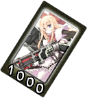| ¿Qué hace? |
|---|
| Aumenta el daño o golpes varia según el tipo de disparos de las muñecas. |
| ¿En Qué Afecta? |
|---|
| Shooting Doll: Rapid Shot!!! |
| Shooting Doll: Laser |
- Rapid Shot!!!: Más Daño y Más Distancia.
- Laser: Más Golpes.
Clase de Muñecas Espadachinas
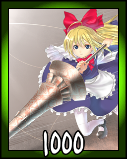| ¿Qué hace? |
|---|
| Mejorando las espadas e habilidades que tienen las muñecas. |
| ¿En Qué Afecta? |
|---|
| Swordswomen Doll: Doll Placement |
- Doll Placement: Más Golpes.
Clase de Muñecas de Arqueros
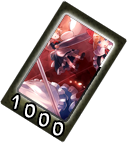| ¿Qué hace? |
|---|
| Hace que las muñecas disparen más flechas. |
| ¿En Qué Afecta? |
|---|
| Archers Doll: Fire Arrows |
- Fire Arrows: Disparan más flechas seguidamente.
Clase de Muñecas Kamikaze

| ¿Qué hace? |
|---|
| Aumenta el daño causado por las patadas. |
| ¿En Qué Afecta? |
|---|
| Kamikaze Doll: Doll Cremation |
| Kamikaze Doll: Edo High-Explosive |
- Doll Cremation: Causa más daño y alarga la distancia.
- Edo High-Explosive: Causa más daño y alarga la distancia de su camino y si esta a nivel 4 persigue al enemigo desde el suelo.
Clase de Muñecas Guardianas
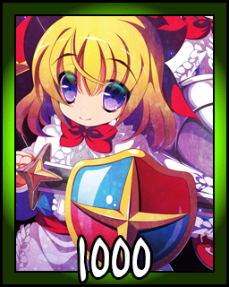| ¿Qué hace? |
|---|
| Aumenta la capacidad de protección de parte de las muñecas. |
| ¿En Qué Afecta? |
|---|
| Keeper Doll Class: My Life of Dolls |
- My Life of Dolls: Aumenta la vida de la muñeca de proteccion y aumenta la suma de muñecas para que te protejan.
Spell Cards
Señal de Maldición "Shanghai Doll"

| ¿Qué hace? | ¿Cuanto Cuesta? |
|---|---|
| Lanza un laser con una sola muñeca y causa bastante daño. Se puede encadenar en: Maldición "Hourai Doll" |
1500 |
- Nivel 1: Menos Daño.
- Nivel 2: Mas Daño.
- Nivel 3: Mas Daño.
- Nivel 4: La Mayoría De Los Daños.
Control Demoníaco "Return Inanimateness"
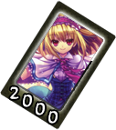| ¿Qué hace? | ¿Cuanto Cuesta? |
|---|---|
| Lanza una muñeca que provoca una poderosa explosión. La explosión, la potencia y la velocidad aumentan. |
2000 |
- Nivel 1: Menos Daño.
- Nivel 2: Mas Daño.
- Nivel 3: Mas Daño.
- Nivel 4: La Mayoría De Los Daños.
Señal de Lanza "Cutie Phalanx"
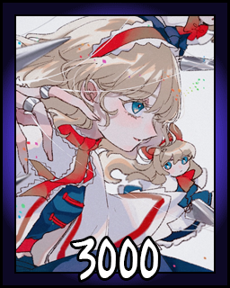| ¿Qué hace? | ¿Cuanto Cuesta? |
|---|---|
| Muchas muñecas atacan al enemigo a corta distancia. Excelente velocidad y cobertura, con bastante buen alcance para arrancar. Una carta de hechizos que se desarrolló como último recurso. |
3000 |
- Nivel 1: 85 de Daño.
- Nivel 2: 86 de Daño.
- Nivel 3: 87 de Daño.
- Nivel 4: 89 de Daño.
Caballera "Doll of Round Table"
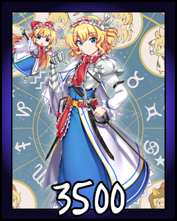| ¿Qué hace? | ¿Cuanto Cuesta? |
|---|---|
| Lanza 4 muñecas para atacar rectamente al enemigo. | 3500 |
- Nivel 1: Poca Duracción.
- Nivel 2: Dura un poco más las muñecas.
- Nivel 3: Las muñecas duran más.
- Nivel 4: Las muñecas duran mucho más.
"Goliath Doll"
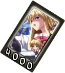| ¿Qué hace? | ¿Cuanto Cuesta? |
|---|---|
| ¿Un muñeco gigante con dos espadas?, esto no es bueno... Bueno, hace que el tamaño de la muñeca aumente y da un espadazo que quita mucha vida. |
4000 |
- Nivel 1: Quita 205 de vida.
- Nivel 2: Quita 215 de vida y se puede moverse solo hacia un lado.
- Nivel 3: Quita 225 de vida y se puede moverse solo hacia un lado un poco más rápido.
- Nivel 4: Quita 235 de vida y va hacía el enemigo.
Muñecas "Lemmings' Parade"
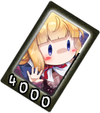| ¿Qué hace? | ¿Cuanto Cuesta? |
|---|---|
| Crea muchas muñecas explosivas que van por el suelo y explotan. | 4000 |
- Nivel 1: Menos Daño.
- Nivel 2: Mas Daño.
- Nivel 3: Aún Más Daño.
- Nivel 4: La Mayoría De Los Daños.
Maldición "Hourai Doll"
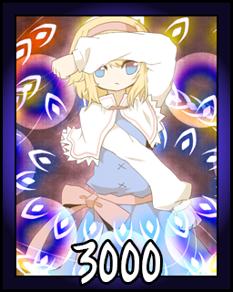| ¿Qué hace? | ¿Cuanto Cuesta? |
|---|---|
| Es la versión mejorada de Señal de Maldición "Shanghai Doll", es más poderosa lanza tres muñecas al ataque. | 3000 |
- Nivel 1: Menos Daño.
- Nivel 2: Mas Daño.
- Nivel 3: Aún Más Daño.
- Nivel 4: La Mayoría De Los Daños.
Señal de Guerra "Little Legion"
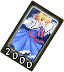| ¿Qué hace? | ¿Cuanto Cuesta? |
|---|---|
| Lanza algunas muñecas que hacen un giro causando daño. | 2000 |
- Nivel 1: Menos Daño.
- Nivel 2: Mas Daño.
- Nivel 3: Aún Más Daño.
- Nivel 4: La Mayoría De Los Daños.
"Distribución de Muñecas"
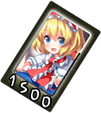| ¿Qué hace? | ¿Cuanto Cuesta? |
|---|---|
| Lanza dos muñecas, una va hacia arriba y otra hacia abajo, que giran mientras disparan balas. | 1500 |
- Nivel 1: Tira algo de balas.
- Nivel 2: Tira un poco más de balas.
- Nivel 3: Tira mucha más balas.
- Nivel 4: Tira las balas necesarias y luego dispara directamente hacia al enemigo.
Soldados de a Pie "Suicide Squad"
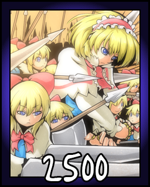| ¿Qué hace? | ¿Cuanto Cuesta? |
|---|---|
| Lanza unas muñecas con pólvora explosiva. | 2500 |
- Nivel 1: Lanzan un par de muñecas hacia el enemigo.
- Nivel 2: Lanzan más muñecas que el nivel 1.
- Nivel 3: Lanzan más muñecas que el nivel 2.
- Nivel 4: Lanzan más muñecas que el nivel 3.
Sacrificio "Suicide Pact"
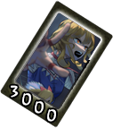| ¿Qué hace? | ¿Cuanto Cuesta? |
|---|---|
| Lanza unas cuantas muñecas que hacen una barrera explosiva. | 3000 |
- Nivel 1: Lanzan un par de muñecas hacia delante.
- Nivel 2: Lanzan más muñecas que el nivel 1.
- Nivel 3: Lanzan más muñecas que el nivel 2.
- Nivel 4: Lanzan más muñecas que el nivel 3.
- Nota: Las explosiones no son inmediatas, de hecho esta spell se puede ejecutar ya estando en el aire también.
Nivel Titania "Explosive Doll Circuit"
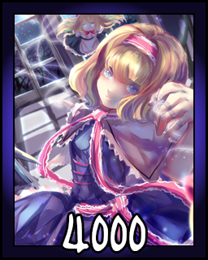| ¿Qué hace? | ¿Cuanto Cuesta? |
|---|---|
| Es hora de sacar el armamento pesado y hacer que las muñecas se muevan solas y acaben con el oponente. | 4000 |
- Nivel 1: Hace poco de daño y bueno sigue la lluvia de balas y de muñecas explosivas.
- Nivel 2: Hace un poco más de daño y bueno sigue la lluvia de balas y de muñecas explosivas.
- Nivel 3: Hace mucho daño y bueno, sigue la lluvia de balas muy seguidas y de muñecas explosivas.
- Nivel 4: Hace aún más daño y bueno, sigue la lluvia de balas y de muñecas explosivas seguidamente.
"Alice con Los Últimas Caballeras"
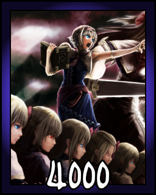| ¿Qué hace? | ¿Cuanto Cuesta? |
|---|---|
| Esta carta es exclusiva de este juego, ya que me recomendaron un poco a un super de Morrigan (Darkstalkers) aunque la idea estaba basando en un movimiento de JoJo's Bizarre Adventure hecho por Capcom. | 4000 |
Assistant Cards
"Muñeca Automática"
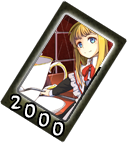| ¿Qué hace? | ¿Cuanto Cuesta? |
|---|---|
| Lanza a tu muñeca y te ayudará sin cesar. | 2000 |
- Nivel 1: Las muñecas actúan muy lentas.
- Nivel 2: Las muñecas actúan un poco más rápido.
- Nivel 3: Las muñecas ayudan aún más.
- Nivel 4: Las muñecas casi nunca paran.
Signo de Titiritera "Manipulate Puppet"
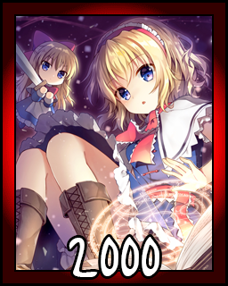| ¿Qué hace? | ¿Cuanto Cuesta? |
|---|---|
| Hay una muñeca girando alrededor de ti disparando. | 2000 |
- Nivel 1: Tira algo de balas.
- Nivel 2: Tira un poco más de balas.
- Nivel 3: Tira mucha más balas.
- Nivel 4: Tira las muchas balas y dispara directamente hacia al enemigo.